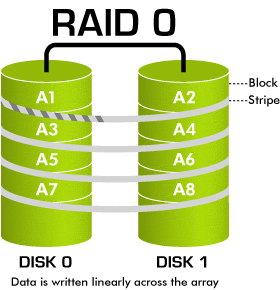
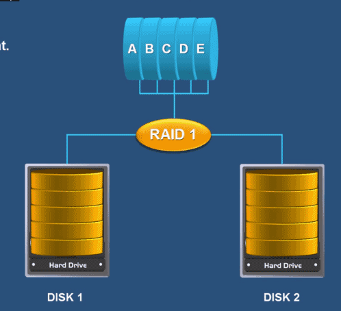
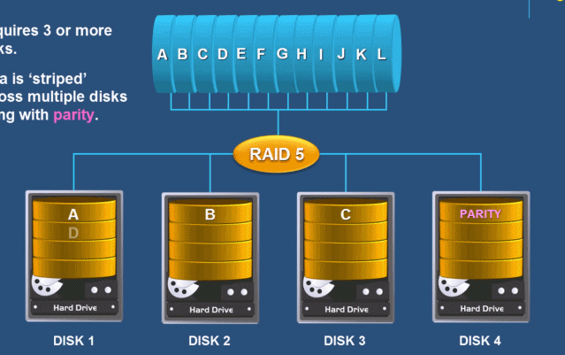
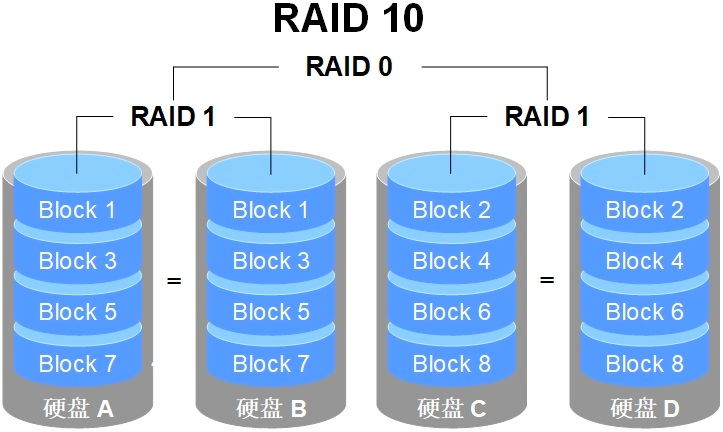
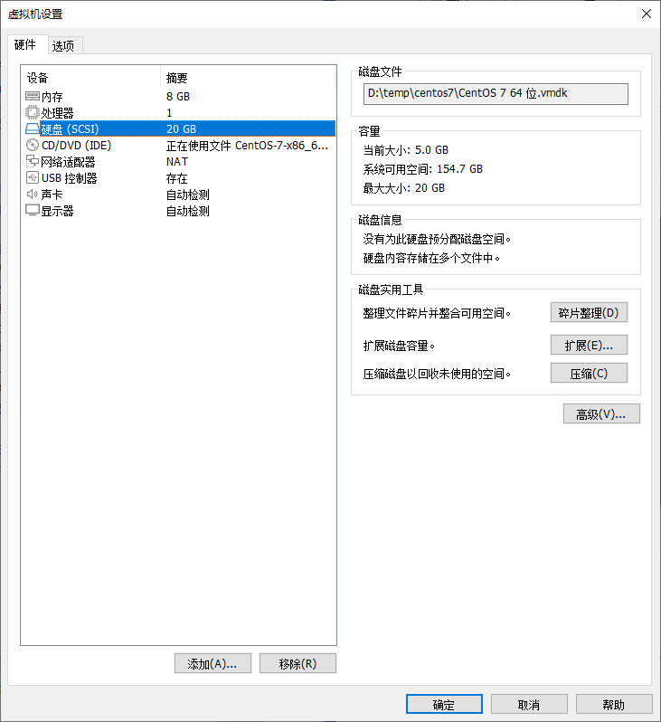
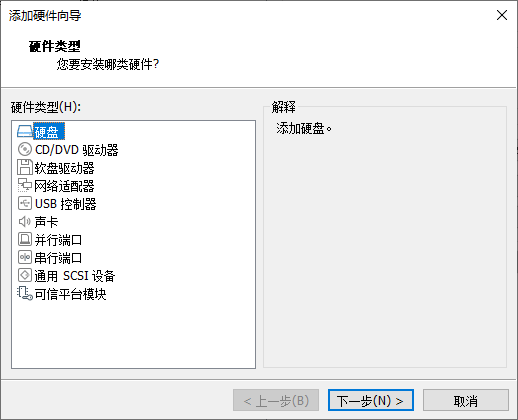
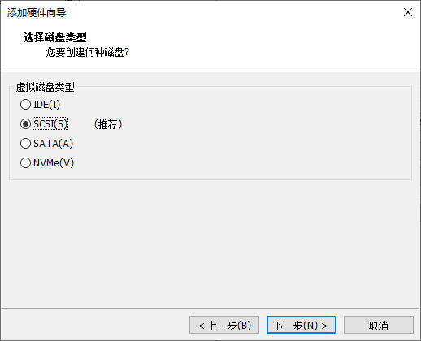
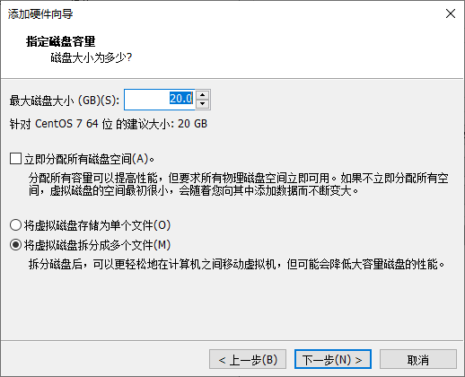
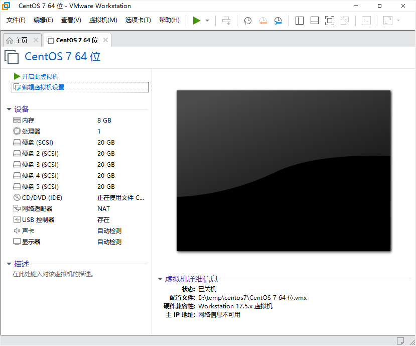
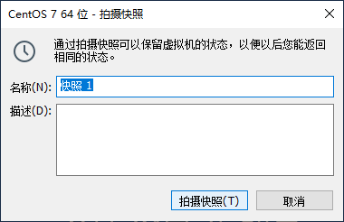

磁盘阵列实战:
磁盘阵列实战:一、RAID磁盘阵列原理二、实战：创建一个磁盘阵列并挂载使用1、在虚拟机中添加4块新的硬盘2、创建磁盘阵列3、磁盘阵列损坏不影响数据安全4、替换新的硬盘并重建磁盘阵列5、删除磁盘阵列三、实战小结
一、RAID磁盘阵列原理
RAID 不但具有数据存储的功能，还有数据保护的作用。什么是Raid？服务器大厂都用的Raid-10是什么？
RAID-0：只要有一块硬盘损坏，数据就会丢失。 把连续的数据分散存储，可以并行读写，性能较好。适合大规模并发读写，对数据安全性要求不高的场景。

RAID-1：优点在于数据备份，整体容量减少了50%。

RAID-5：性能和数据备份的均衡考虑 。例如：如下图所示，容量=4-1，其中一块硬盘存储的是校验码。如果同时损毁2块以上的硬盘，数据就会 丢失。也就是说仅支持1块硬盘损毁。

RAID-10： 先用两块硬盘组成RAID-1，然后把两组硬盘组成RAID-0。这样就能够既能利用RAID-0读写性能的好的优点，又能利用RAID-1的数据安全的特点。综合了两者优点。

二、实战：创建一个磁盘阵列并挂载使用
1、在虚拟机中添加4块新的硬盘
步骤如下：
首先虚拟机处于关机状态下，点击编辑虚拟机设置：

选中“硬盘”：

点击上图中的“添加”：

点击“下一步”：

选择虚拟磁盘类型，这里选择“SCSI”，下一步：

选中“创建新虚拟硬盘”，点击下一步：

设置磁盘大小，这里一起是默认即可。

点击“完成”：

点击“确定”，如下图所示，就出现了一块新的硬盘。

重复上述过程，再添加3块硬盘。也就是说一共添加了4块硬盘。
全部添加完成后，结果如下图所示：

可以看到，新添加的硬盘2，3，4，5。添加完成后，启动Linux。
然后按照如下步骤，给虚拟机拍摄快照。以便将来遇到问题可以迅速的恢复到现在这个状态。



2、创建磁盘阵列
第一步：查看4块硬盘
x1# 使用lsblk命令查看系统所有硬盘，这里应该看到如下所示的sdb,sdc,sdd,sde四块新添加的硬盘。2# 这里sda是系统盘，Linux操作系统安装在这块硬盘上。sr0是光盘。3[root@bogon ~]# lsblk4NAME MAJ:MIN RM SIZE RO TYPE MOUNTPOINT5sda 8:0 0 20G 0 disk6├─sda1 8:1 0 1G 0 part /boot7└─sda2 8:2 0 19G 0 part8 ├─centos-root 253:0 0 17G 0 lvm /9 └─centos-swap 253:1 0 2G 0 lvm [SWAP]10sdb 8:16 0 20G 0 disk11sdc 8:32 0 20G 0 disk12sdd 8:48 0 20G 0 disk13sde 8:64 0 20G 0 disk14sr0 11:0 1 9.6G 0 rom /run/media/lsr/CentOS 7 x86_6415
第二步：创建磁盘阵列RAID-10
xxxxxxxxxx591# 创建RAID的命令是mdadm，首先查看帮助，了解该命令的详细用法。2[root@bogon ~]# mdadm --help3mdadm is used for building, managing, and monitoring4Linux md devices (aka RAID arrays)5...6
7
8# 使用mdadm创建RAID。这里创建的是RAID-10，所以需要4块硬盘。9# 用法详解：10# -C 创建磁盘阵列 -v 显示创建的过程 /dev/md0 磁盘阵列的名称 -n 4 使用4块硬盘 -l 10 创建raid-10阵列11[root@bogon ~]# mdadm -Cv /dev/md0 -n 4 -l 10 /dev/sdb /dev/sdc /dev/sdd /dev/sde12mdadm: layout defaults to n213mdadm: layout defaults to n214mdadm: chunk size defaults to 512K15mdadm: size set to 20954112K16mdadm: Defaulting to version 1.2 metadata17mdadm: array /dev/md0 started.18
19# 查看是否创建成功20[root@bogon ~]# mdadm -Q /dev/md021/dev/md0: 39.97GiB raid10 4 devices, 0 spares. Use mdadm --detail for more detail.22#RAID 10技术的原理。它通过两两一组硬盘组成的RAID 1磁盘阵列保证了数据的可靠性，23#其中每一份数据都会被保存两次，因此导致硬盘存在50%的使用率和50%的冗余率。24#这样一来，80GB的硬盘容量也就只有一半了。25
26# 如果想要更加详细的查看磁盘阵列的信息，可以使用如下命令27[root@bogon ~]# mdadm -D /dev/md028/dev/md0:29 Version : 1.230 Creation Time : Wed May 29 19:58:42 202431 Raid Level : raid10 # 磁盘阵列类型32 Array Size : 41908224 (39.97 GiB 42.91 GB)33 Used Dev Size : 20954112 (19.98 GiB 21.46 GB)34 Raid Devices : 4 # 硬盘数量35 Total Devices : 436 Persistence : Superblock is persistent37
38 Update Time : Wed May 29 20:02:13 202439 State : clean40 Active Devices : 4 # 活动的设备数量41 Working Devices : 442 Failed Devices : 043 Spare Devices : 044
45 Layout : near=246 Chunk Size : 512K47
48Consistency Policy : resync49
50 Name : bogon:0 (local to host bogon)51 UUID : de5a01ef:927c1b67:a07b1432:cd0f520d52 Events : 1753# 四块硬盘的具体信息54 Number Major Minor RaidDevice State55 0 8 16 0 active sync set-A /dev/sdb56 1 8 32 1 active sync set-B /dev/sdc57 2 8 48 2 active sync set-A /dev/sdd58 3 8 64 3 active sync set-B /dev/sde59
第三步：使用该磁盘阵列
xxxxxxxxxx681# 使用lsblk -f 查看Linux硬盘及分区的详细信息。2[root@bogon ~]# lsblk -f3NAME FSTYPE LABEL UUID MOUNTPOINT4sda5├─sda1 xfs ef97badb-0869-49b1-b78e-8099f64f6baa /boot6└─sda2 LVM2_member FBLD4g-kJuw-e6CF-UyRd-qHnH-Xc0C-lQ9ofP7 ├─centos-root xfs c902f40d-94a0-41ac-9c47-27d5e7c0e039 /8 └─centos-swap swap 5663d949-c0d2-4a06-99fb-12455c5bda0c [SWAP]9sdb linux_raid_member bogon:0 de5a01ef-927c-1b67-a07b-1432cd0f520d10└─md011sdc linux_raid_member bogon:0 de5a01ef-927c-1b67-a07b-1432cd0f520d12└─md013sdd linux_raid_member bogon:0 de5a01ef-927c-1b67-a07b-1432cd0f520d14└─md015sde linux_raid_member bogon:0 de5a01ef-927c-1b67-a07b-1432cd0f520d16└─md017sr0 iso9660 CentOS 7 x86_64 2022-07-26-18-09-05-00 /run/media/lsr/CentOS 7 x86_6418
19
20# 格式化该磁盘阵列，类型为xfs文件系统21[root@bogon ~]# mkfs -t xfs /dev/md022meta-data=/dev/md0 isize=512 agcount=16, agsize=654720 blks23 = sectsz=512 attr=2, projid32bit=124 = crc=1 finobt=0, sparse=025data = bsize=4096 blocks=10475520, imaxpct=2526 = sunit=128 swidth=256 blks27naming =version 2 bsize=4096 ascii-ci=0 ftype=128log =internal log bsize=4096 blocks=5120, version=229 = sectsz=512 sunit=8 blks, lazy-count=130realtime =none extsz=4096 blocks=0, rtextents=031
32#新建一个目录33[root@bogon ~]# mkdir raid34#把格式化以后得磁盘阵列挂载到/root/raid目录上。35[root@bogon ~]# mount -t xfs /dev/md0 /root/raid/36
37#再次查看分区信息，可以看到/dev/md0已经挂载到了/root/raid目录38[root@bogon ~]# lsblk -f39NAME FSTYPE LABEL UUID MOUNTPOINT40sda41├─sda1 xfs ef97badb-0869-49b1-b78e-8099f64f6baa /boot42└─sda2 LVM2_member FBLD4g-kJuw-e6CF-UyRd-qHnH-Xc0C-lQ9ofP43 ├─centos-root xfs c902f40d-94a0-41ac-9c47-27d5e7c0e039 /44 └─centos-swap swap 5663d949-c0d2-4a06-99fb-12455c5bda0c [SWAP]45sdb linux_raid_member bogon:0 de5a01ef-927c-1b67-a07b-1432cd0f520d46└─md0 xfs 3ac217d8-5bf1-41dc-ad52-40c08def23d4 /root/raid47sdc linux_raid_member bogon:0 de5a01ef-927c-1b67-a07b-1432cd0f520d48└─md0 xfs 3ac217d8-5bf1-41dc-ad52-40c08def23d4 /root/raid49sdd linux_raid_member bogon:0 de5a01ef-927c-1b67-a07b-1432cd0f520d50└─md0 xfs 3ac217d8-5bf1-41dc-ad52-40c08def23d4 /root/raid51sde linux_raid_member bogon:0 de5a01ef-927c-1b67-a07b-1432cd0f520d52└─md0 xfs 3ac217d8-5bf1-41dc-ad52-40c08def23d4 /root/raid53sr0 iso9660 CentOS 7 x86_64 2022-07-26-18-09-05-00 /run/media/lsr/CentOS 7 x86_6454
55# 查看磁盘阵列的索引节点使用情况56[root@bogon raid]# df -i /root/raid57文件系统 Inode 已用(I) 可用(I) 已用(I)% 挂载点58/dev/md0 20951040 3 20951037 1% /root/raid59#在该磁盘阵列上，新建10个文件60[root@bogon raid]# touch /root/raid/hello{1..10}61[root@bogon raid]# ls /root/raid62hello1 hello10 hello2 hello3 hello4 hello5 hello6 hello7 hello8 hello963
64#再次查看索引节点，发现可以用节点从20951037变成了20951027。也就是说这10个文件占用了磁盘阵列10个索引节点。65[root@bogon raid]# df -i /root/raid66文件系统 Inode 已用(I) 可用(I) 已用(I)% 挂载点67/dev/md0 20951040 13 20951027 1% /root/raid68
3、磁盘阵列损坏不影响数据安全
xxxxxxxxxx771# 当上述的磁盘阵列中损坏一块硬盘时，不影响数据安全性。2# 现在使用如下命令来模拟一块硬盘损坏的情况: -f 模拟磁盘损坏的情况3[root@bogon raid]# mdadm /dev/md0 -f /dev/sdb4mdadm: set /dev/sdb faulty in /dev/md05
6# 查看磁盘阵列，发现只有3块可以工作了。7[root@bogon raid]# mdadm -D /dev/md08/dev/md0:9 Version : 1.210 Creation Time : Wed May 29 19:58:42 202411 Raid Level : raid1012 Array Size : 41908224 (39.97 GiB 42.91 GB)13 Used Dev Size : 20954112 (19.98 GiB 21.46 GB)14 Raid Devices : 415 Total Devices : 416 Persistence : Superblock is persistent17
18 Update Time : Wed May 29 20:48:17 202419 State : clean, degraded20 Active Devices : 3 # 工作的硬盘只有3块了21 Working Devices : 322 Failed Devices : 1 # 损坏了一块硬盘23 Spare Devices : 024
25 Layout : near=226 Chunk Size : 512K27
28Consistency Policy : resync29
30 Name : bogon:0 (local to host bogon)31 UUID : de5a01ef:927c1b67:a07b1432:cd0f520d32 Events : 1933
34 Number Major Minor RaidDevice State35 - 0 0 0 removed36 1 8 32 1 active sync set-B /dev/sdc37 2 8 48 2 active sync set-A /dev/sdd38 3 8 64 3 active sync set-B /dev/sde39
40 0 8 16 - faulty /dev/sdb #这块硬盘已经损坏41 42# 把该块损坏的硬盘从磁盘阵列中移除。43[root@bogon raid]# mdadm /dev/md0 -r /dev/sdb44# 再次查看磁盘阵列45mdadm: hot removed /dev/sdb from /dev/md046[root@bogon raid]# mdadm -D /dev/md047/dev/md0:48 Version : 1.249 Creation Time : Wed May 29 19:58:42 202450 Raid Level : raid1051 Array Size : 41908224 (39.97 GiB 42.91 GB)52 Used Dev Size : 20954112 (19.98 GiB 21.46 GB)53 Raid Devices : 454 Total Devices : 355 Persistence : Superblock is persistent56
57 Update Time : Wed May 29 20:56:02 202458 State : clean, degraded59 Active Devices : 360 Working Devices : 361 Failed Devices : 062 Spare Devices : 063
64 Layout : near=265 Chunk Size : 512K66
67Consistency Policy : resync68
69 Name : bogon:0 (local to host bogon)70 UUID : de5a01ef:927c1b67:a07b1432:cd0f520d71 Events : 2072
73 Number Major Minor RaidDevice State74 - 0 0 0 removed75 1 8 32 1 active sync set-B /dev/sdc76 2 8 48 2 active sync set-A /dev/sdd77 3 8 64 3 active sync set-B /dev/sde4、替换新的硬盘并重建磁盘阵列
把虚拟机关机，然后按照上述的步骤，在虚拟机中再新添加一块硬盘。
xxxxxxxxxx1041# 查看Linux中硬盘，可以看到新添加的硬盘sdf2[root@bogon ~]# lsblk -f3NAME FSTYPE LABEL UUID MOUNTPOINT4sda5├─sda1 xfs ef97badb-0869-49b1-b78e-8099f64f6baa /boot6└─sda2 LVM2_member FBLD4g-kJuw-e6CF-UyRd-qHnH-Xc0C-lQ9ofP7├─centos-root xfs c902f40d-94a0-41ac-9c47-27d5e7c0e039 /8└─centos-swap swap 5663d949-c0d2-4a06-99fb-12455c5bda0c [SWAP]9sdb linux_raid_member bogon:0 de5a01ef-927c-1b67-a07b-1432cd0f520d10sdc linux_raid_member bogon:0 de5a01ef-927c-1b67-a07b-1432cd0f520d11└─md127 xfs 3ac217d8-5bf1-41dc-ad52-40c08def23d412sdd linux_raid_member bogon:0 de5a01ef-927c-1b67-a07b-1432cd0f520d13└─md127 xfs 3ac217d8-5bf1-41dc-ad52-40c08def23d414sde linux_raid_member bogon:0 de5a01ef-927c-1b67-a07b-1432cd0f520d15└─md127 xfs 3ac217d8-5bf1-41dc-ad52-40c08def23d416sdf #新添加的硬盘17sr0 iso9660 CentOS 7 x86_64 2022-07-26-18-09-05-0018#原来的/dev/md0磁盘阵列名称变成了/dev/md12722#把上面的sdf这块新的硬盘，就可以使用-a选项添加新的硬盘到阵列中。24[root@bogon ~]# mdadm /dev/md127 -a /dev/sdf25mdadm: added /dev/sdf26# 查看阵列信息，添加了硬盘以后，会需要一个时间进行数据重建，时间长短依据数据量的大小。28[root@bogon ~]# mdadm -D /dev/md12729/dev/md127:30Version : 1.231Creation Time : Wed May 29 19:58:42 202432Raid Level : raid1033Array Size : 41908224 (39.97 GiB 42.91 GB)34Used Dev Size : 20954112 (19.98 GiB 21.46 GB)35Raid Devices : 436Total Devices : 437Persistence : Superblock is persistent38Update Time : Wed May 29 21:09:00 202440State : clean, degraded, recovering41Active Devices : 342Working Devices : 443Failed Devices : 044Spare Devices : 145Layout : near=247Chunk Size : 512K48Consistency Policy : resync50Rebuild Status : 14% complete # 数据重建完成了14%52Name : bogon:0 (local to host bogon)54UUID : de5a01ef:927c1b67:a07b1432:cd0f520d55Events : 2756Number Major Minor RaidDevice State584 8 80 0 spare rebuilding /dev/sdf591 8 32 1 active sync set-B /dev/sdc602 8 48 2 active sync set-A /dev/sdd613 8 64 3 active sync set-B /dev/sde62#过一段时间后，再次查询阵列信息，发现数据重建已经完成。64[root@bogon ~]# mdadm -D /dev/md12765/dev/md127:66Version : 1.267Creation Time : Wed May 29 19:58:42 202468Raid Level : raid1069Array Size : 41908224 (39.97 GiB 42.91 GB)70Used Dev Size : 20954112 (19.98 GiB 21.46 GB)71Raid Devices : 472Total Devices : 473Persistence : Superblock is persistent74Update Time : Wed May 29 21:10:32 202476State : clean77Active Devices : 4 #活动的设备是4块硬盘78Working Devices : 479Failed Devices : 080Spare Devices : 081Layout : near=283Chunk Size : 512K84Consistency Policy : resync86Name : bogon:0 (local to host bogon)88UUID : de5a01ef:927c1b67:a07b1432:cd0f520d89Events : 4290Number Major Minor RaidDevice State924 8 80 0 active sync set-A /dev/sdf #原有的sdb硬盘被替换成sdf931 8 32 1 active sync set-B /dev/sdc942 8 48 2 active sync set-A /dev/sdd953 8 64 3 active sync set-B /dev/sde96# 数据并没有丢失98# 重新挂载该磁盘阵列99[root@bogon ~]# mount -t xfs /dev/md127 /root/raid100# 查看阵列中的文件，发现原来创建的10个文件仍然存在，并没有因为一块硬盘损坏出现数据丢失的情况。101[root@bogon ~]# ls /root/raid102hello1 hello10 hello2 hello3 hello4 hello5 hello6 hello7 hello8 hello9103
5、删除磁盘阵列
xxxxxxxxxx211# 首先卸载磁盘阵列2[root@bogon ~]# umount /dev/md1273
4# 删除磁盘阵列5[root@bogon ~]# mdadm --stop /dev/md1276mdadm: stopped /dev/md1277
8# 查看磁盘信息，发现磁盘阵列已经删除。9[root@bogon ~]# lsblk10NAME MAJ:MIN RM SIZE RO TYPE MOUNTPOINT11sda 8:0 0 20G 0 disk12├─sda1 8:1 0 1G 0 part /boot13└─sda2 8:2 0 19G 0 part14 ├─centos-root 253:0 0 17G 0 lvm /15 └─centos-swap 253:1 0 2G 0 lvm [SWAP]16sdb 8:16 0 20G 0 disk17sdc 8:32 0 20G 0 disk18sdd 8:48 0 20G 0 disk19sde 8:64 0 20G 0 disk20sdf 8:80 0 20G 0 disk21sr0 11:0 1 9.6G 0 rom三、实战小结
本次实战完成了以下任务：
- 磁盘阵列原理
- 添加4块新硬盘
- 创建RAID-10
- 损坏一块硬盘
- 替换新的硬盘（可以利用原来的三块硬盘，重建好恢复数据）
- 重建后，发现阵列中的原有数据是并没有丢失
- 删除磁盘阵列
磁盘阵列实战:一、RAID磁盘阵列原理二、实战：创建一个磁盘阵列并挂载使用1、在虚拟机中添加4块新的硬盘2、创建磁盘阵列3、磁盘阵列损坏不影响数据安全4、替换新的硬盘并重建磁盘阵列5、删除磁盘阵列三、实战小结